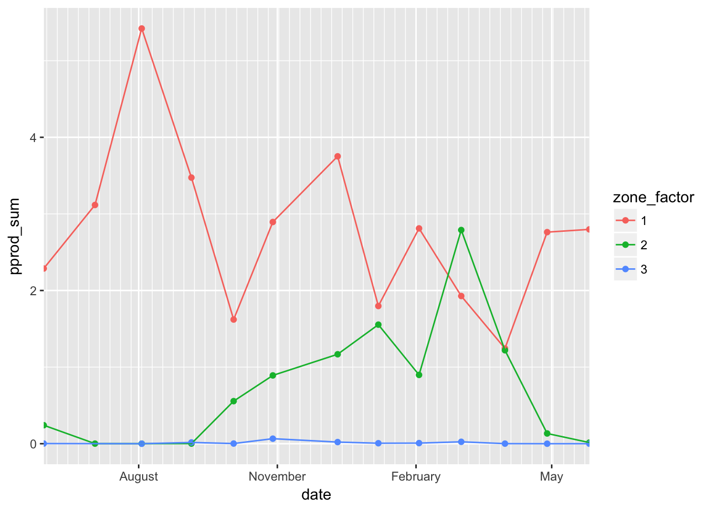

How to work with lake profile data
This code loads the libraries: # echo=FALSE hides the output
## Loading tidyverse: ggplot2
## Loading tidyverse: tibble
## Loading tidyverse: tidyr
## Loading tidyverse: readr
## Loading tidyverse: purrr
## Loading tidyverse: dplyr## Conflicts with tidy packages ----------------------------------------------## filter(): dplyr, stats
## lag(): dplyr, stats##
## Attaching package: 'reshape2'## The following object is masked from 'package:tidyr':
##
## smiths##
## Attaching package: 'scales'## The following object is masked from 'package:purrr':
##
## discard## The following objects are masked from 'package:readr':
##
## col_factor, col_numeric##
## Attaching package: 'lubridate'## The following object is masked from 'package:base':
##
## date##
## Attaching package: 'gridExtra'## The following object is masked from 'package:dplyr':
##
## combine##
## Attaching package: 'zoo'## The following objects are masked from 'package:base':
##
## as.Date, as.Date.numericImport the lake profile data from chla/Prodcution and smoothed temperature data
## Parsed with column specification:
## cols(
## date = col_character(),
## depth = col_integer(),
## chl = col_double(),
## pprod = col_double(),
## zmix = col_double(),
## zthermocline = col_double(),
## zhypo = col_double(),
## zone = col_integer()
## )## Parsed with column specification:
## cols(
## site = col_character(),
## date = col_character(),
## depth = col_integer(),
## temp = col_double()
## )## Parsed with column specification:
## cols(
## site = col_character(),
## Depth = col_integer(),
## season = col_character(),
## date = col_character(),
## drp = col_double(),
## tp = col_double()
## )How to do na.approximations http://stackoverflow.com/questions/23339209/substitute-na-values-depending-of-position-in-dataframe lets leave this alone or now and get to the rest of this
#ltm_fullprofile$pH_smooth_filled <- na.approx(ltm_fullprofile$pH_smooth, rule=2)
# get rid of the 8-05 temp dataMerge data from both dataframes keeping all data from: http://stackoverflow.com/questions/1299871/how-to-join-merge-data-frames-inner-outer-left-right
ltm_fullprofile <- merge(ltm_prod_profile, ltm_temp_profile, by = c("site","date","depth"), all = TRUE)
# filter data to less than 100 m
ltm_fullprofile <- ltm_fullprofile %>% filter(depth<=100)
ltm_fullprofile <- ltm_fullprofile %>% filter(depth>=1)Assign Season - this is not needed as they have all of them now
ltm_fullprofile$month <- as.numeric(format(ltm_fullprofile$date,"%m"))
ltm_fullprofile <- mutate(ltm_fullprofile, season = ifelse(month > "4" | month < "10", "dry", "wet"))Mean and SE of all values in a new dataframe http://stackoverflow.com/questions/29821841/dplyr-summarise-each-standard-error-function
ltm_fullprofile_means <- ltm_fullprofile %>%
group_by(season, depth) %>%
summarise(
chl_mean =mean(chl, na.rm=TRUE), chl_sd=sd(chl, na.rm=TRUE), chl_sem = sd(chl, na.rm=TRUE)/sqrt(length(chl)),
pprod_mean =mean(pprod, na.rm=TRUE), pprod_sd=sd(pprod, na.rm=TRUE), pprod_sem = sd(pprod, na.rm=TRUE)/sqrt(length(pprod)),
zmix_mean =mean(zmix, na.rm=TRUE), zmix_sd=sd(zmix, na.rm=TRUE), zmix_sem = sd(zmix, na.rm=TRUE)/sqrt(length(zmix)),
zthermocline_mean =mean(zthermocline, na.rm=TRUE), zthemrocline_sd=sd(zthermocline, na.rm=TRUE), zthemrocline_sem = sd(zthermocline, na.rm=TRUE)/sqrt(length(zthermocline)),
zhypo_mean =mean(zhypo, na.rm=TRUE), zhypo_sd=sd(zhypo, na.rm=TRUE), zhypo_sem = sd(zhypo, na.rm=TRUE)/sqrt(length(zhypo)),
temp_mean =mean(temp, na.rm=TRUE), temp_sd=sd(temp, na.rm=TRUE), temp_sem = sd(temp, na.rm=TRUE)/sqrt(length(temp))
)Now to make the ltm_fullprofile_means wide for plotting using RESHAPE http://seananderson.ca/2013/10/19/reshape.html
require(reshape2)
ltm_fullprofile_means<- ltm_fullprofile_means %>% ungroup()
# go to full long format
ltm_seasonmeans_widestep1 <- melt(ltm_fullprofile_means, id.vars = c("season", "depth"))
ltm_seasonmeans_wide <- dcast(ltm_seasonmeans_widestep1, depth ~ season + variable)
rm(ltm_seasonmeans_widestep1)Here is where we have to get sums by zones
ltm_zonesums_bydate <- ltm_fullprofile %>%
group_by(season,date, zone) %>%
summarise(
chl_sum =sum(chl, na.rm=TRUE), chl_N = length(chl),
pprod_sum =sum(pprod, na.rm=TRUE), pprod_N=length(pprod)
)Now to get the averages by zone from the ltm_zonesums_bydate dataframe
ltm_zonemeans_season <- ltm_zonesums_bydate %>%
group_by(season, zone) %>%
summarise(
chl_mean =mean(chl_sum, na.rm=TRUE), chl_sd=sd(chl_sum, na.rm=TRUE), chl_sem = sd(chl_sum, na.rm=TRUE)/sqrt(length(chl_sum)),
pprod_mean =mean(pprod_sum, na.rm=TRUE), pprod_sd=sd(pprod_sum, na.rm=TRUE), pprod_sem = sd(pprod_sum, na.rm=TRUE)/sqrt(length(pprod_sum))
)Lake Tanganyika Kigoma site for primary production with depth
## Warning: Ignoring unknown parameters: width
Lake Tanganyika Kigoma site for chlorphyll a with depth
## Warning: Ignoring unknown parameters: widthLake Tanganyika Mahale site for chlorphyll a sums by zone
Lake Tanganyika Mahale site for prmary prod sums by zone 
writecsv files of output # ```{r} # write_csv(ltm_fullprofile,“./output/ltm profile merged chl and prod and smoothed.csv”) # # write_csv(ltm_fullprofile_means,“./output/ltm profile means with depth.csv”) # # write_csv(ltm_zonesums_bydate,“./output/ltm profile sums for each date and zone.csv”) # # write_csv(ltm_zonemeans_season,“./output/ltm profile means of the summed chl and pprod data.csv”) # # write_csv(ltm_seasonmeans_wide,“./output/ltm profile wide format.csv”)